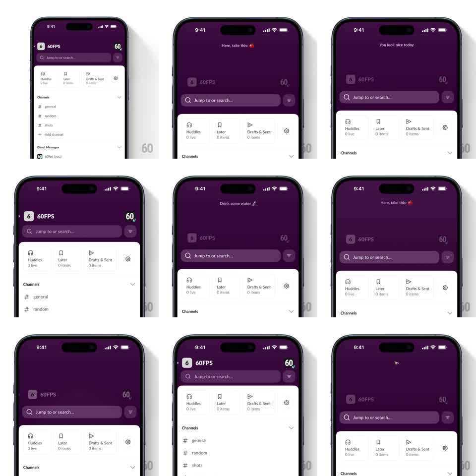

Media
Frame-by-frame

Rebuild this interaction 1:1: Slack mobile's pull-down easter egg - dragging down on the home screen's dark header reveals a randomized playful quote in the space above the workspace content, then snaps back on release.

Rebuild this interaction 1:1: Slack mobile's pull-down easter egg - dragging down on the home screen's dark header reveals a randomized playful quote in the space above the workspace content, then snaps back on release.
## Integration
Integration: stack-agnostic spec - springs given as stiffness/damping, timed motions as duration + curve; map every value to your framework and animation library of choice.
## Scene
Slack home: dark purple header with workspace name ("60FPS"), search bar, and shortcut row (Huddles, Later, Drafts & Sent), white channel list below. Pulling down stretches the header region, revealing a centered one-line quote with an emoji (e.g. "Here, take this: apple", "You look nice today", "Drink some water").
## Motion spec
Pattern: gesture-driven reveal with rubber-band and snap-back.
- Drag: header height tracks the finger 1:1 up to ~120px, then rubber-bands (0.5x beyond); the quote fades in proportionally with pull distance (fully opaque at ~80px).
- Quote is picked randomly from a pool on each pull.
- Release: header springs back to rest height (spring ~260/26, ~300ms), quote fades out in the last 100ms.
- Channel list rides the header edge down and back; no independent motion.
## Calibration
- The quote must be legible before snap-back: require the pull past ~80px, otherwise collapse immediately.
- Rubber-band curve keeps the drag feeling elastic, never sticky.
## Reduced motion
No rubber-band; header extends linearly and returns without overshoot.
## Don't miss
- A fresh random quote on every pull, including repeats in one session.
- Status bar area stays the header's dark purple throughout - the pull grows the colored region, not a white gap.